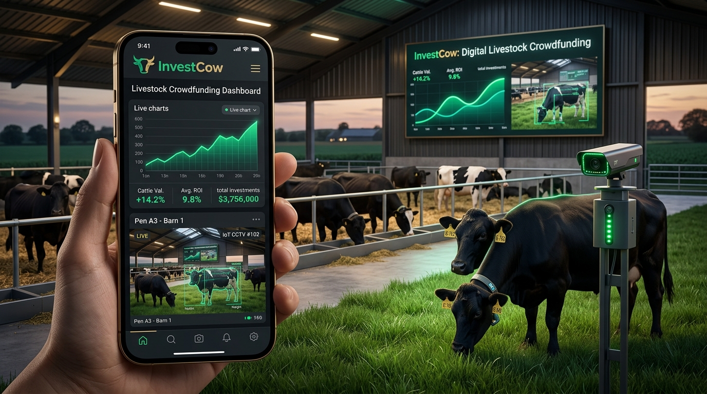
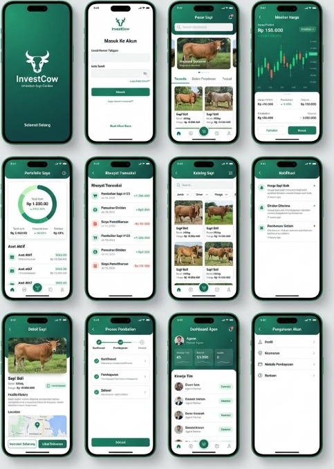
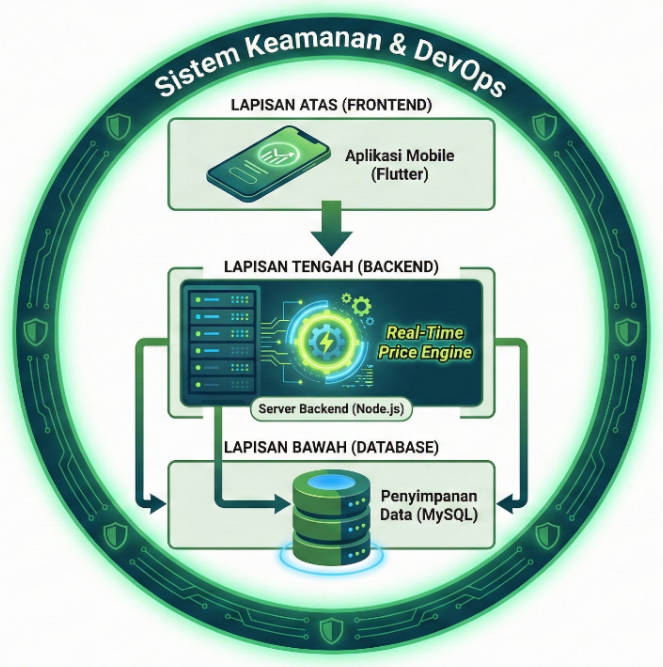
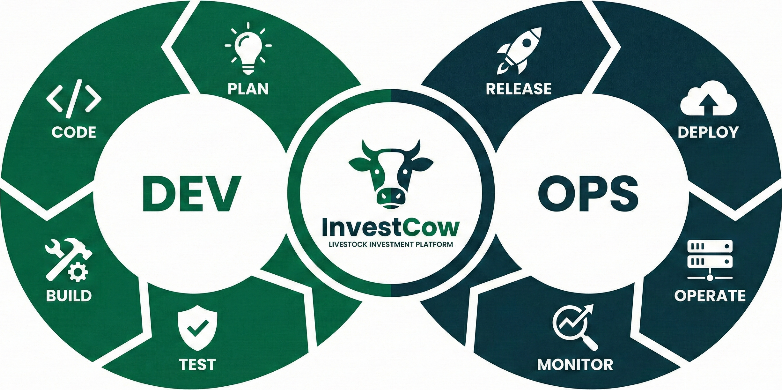

InvestCow
Pengembangan Platform Crowdfunding Ternak Sapi Berbasis Mobile dengan Transparansi Data Real-Time dan Monitoring Visual
Investor Ingin Mendanai Sapi, tapi Tidak Bisa Melihatnya Langsung
Pembiayaan agribisnis kini banyak bergerak lewat platform crowdfunding digital yang mempertemukan pemilik proyek ternak dengan investor secara online. Model ini memperluas akses pendanaan — tetapi sapi bukan aset di atas kertas. Kondisinya terus berubah setiap hari, di kandang yang jauh dari jangkauan investor.
Ketergantungan Sepihak & Asimetri Informasi
-
❌
Aset Hayati yang Berubah Dinamis: Berbeda dari dokumen atau properti statis, kondisi fisik dan bobot ternak berubah dinamis setiap hari di kandang mitra.
-
❌
Jarak Geografis yang Jauh: Investor berlokasi jauh dari peternakan, sehingga kunjungan fisik secara berkala sangat sulit dan memakan biaya tinggi.
-
❌
Asimetri Informasi: Investor hanya bergantung pada laporan periodik pengelola tanpa cara memverifikasi sendiri kondisi fisik ternak yang didanai.
Dua Bukti Verifikasi: Angka & Bukti Visual
-
✅
Transparansi Data Real-Time: Price Engine menyajikan nilai investasi acuan dan riwayat fluktuasi secara terbuka lewat antarmuka mobile.
-
✅
Akses Pemantauan Visual: Integrasi CCTV kandang memberikan akses langsung bagi investor untuk melihat kondisi fisik ternak dari ponsel.
-
✅
Mengurangi Asimetri Informasi: Mempertemukan bukti kuantitatif dan bukti visual kasat mata untuk membangun transparansi yang bertanggung jawab.
Catatan Ilmiah: Transparansi data dan visual dalam penelitian ini dirancang untuk meminimalkan kesenjangan akses informasi (information asymmetry). Sistem ini tidak menghilangkan seluruh risiko biologis ternak atau dinamika pasar secara otomatis, melainkan menyediakan sarana pemantauan mandiri yang lebih bertanggung jawab bagi investor.
Dari Keraguan Menuju Transparansi: Kisah Perjalanan Investor
Sebuah visualisasi naratif yang menggambarkan bagaimana kesenjangan informasi dalam pembiayaan ternak sapi dialami di dunia nyata dan bagaimana InvestCow mengubah keraguan menjadi kepercayaan berbasis bukti empiris.
Keresahan Investor di Tengah Jarak Ratusan Kilometer
Pak Budi, seorang calon investor di kota besar, ingin mendanai proyek penggemukan sapi potong di pelosok pedesaan Jawa Timur. Niat baik mendukung peternak lokal terhalang satu kecemasan besar: Bagaimana ia tahu sapinya benar-benar ada, diberi pakan layak, dan tidak dijual sepihak? Selama ini, bukti yang diterima hanyalah pesan teks singkat tanpa kejelasan.
Ternak adalah Aset Hayati, Bukan Sekadar Dokumen Kertas
Berbeda dari investasi properti atau emas, sapi bernyawa dan kondisinya terus berubah setiap hari. Jika sapi terserang demam atau stres, bobotnya bisa turun belasan kilogram dalam hitungan hari. Ketiadaan akses verifikasi mandiri membuat investor merasa 'membeli kucing dalam karung'—menanggung risiko kerugian finansial penuh tanpa daya kontrol.
Dua Jendela Transparansi di Genggaman Ponsel Pintar
Pak Budi kemudian menggunakan InvestCow. Cukup membuka aplikasi ponsel dari rumah: Price Engine menampilkan grafik fluktuasi nilai investasi acuan secara real-time melalui WebSocket Socket.io, dan Smart CCTV kandang menyiarkan sapi Bali yang ia danai sedang aktif bergerak dan memamah pakan. Angka numerik kini divalidasi oleh bukti visual kasat mata.
Validasi Nyata 101 Responden Seminar Nasional
Pengalaman Pak Budi terbukti secara empiris. Dalam uji penerimaan pengguna (UAT) terhadap 101 responden lintas latar belakang (investor 63,4%, peternak 31,7%, dinas 4,0%), variabel Transparansi Sistem meraih nilai tertinggi 4,17 dari 5,00, dan 97% responden menilai tinggi hingga sangat tinggi. Transparansi berlapis terbukti membangun rasa percaya yang kokoh.
Babak 1: Keresahan Investor di Kota
Pak Budi hanya memegang selembar chat pesan singkat. Kandang berjarak 350 km dari kota. Tanpa verifikasi langsung, rasa was-was dan keraguan investasi terus membayangi.
Asimetri Informasi TinggiSatu Platform, Dua Bukti: Angka dan Gambar
InvestCow menyatukan dua saluran transparansi — Price Engine untuk transparansi data nilai secara real-time dan Smart Visual CCTV untuk verifikasi fisik kasat mata.
Price Engine
Transparansi Data Real-TimePrice Engine memperbarui informasi nilai dan riwayat harga investasi secara langsung untuk membantu investor memahami fluktuasi nilai aset.
Smart Visual Monitoring
Transparansi Bukti VisualKamera CCTV memberi akses pemantauan langsung ke kondisi fisik ternak dan suasana kandang, melengkapi angka finansial dengan bukti kasat mata.

Bagaimana InvestCow Bekerja?
Alur siklus investasi terpadu dari registrasi hingga pemantauan portofolio. Urutan langkah disusun secara kronologis 1 sampai 6, dan tahapan setiap aktor terstruktur berurutan.
Dirancang untuk Memantau Investasi dari Genggaman
Implementasi antarmuka Flutter Material Design 3. Didesain secara ergonomis agar investor dapat meninjau data aset dan visual kandang kapan pun.
Pasar & Katalog Sapi Terverifikasi
Menampilkan daftar proyek sapi aktif (seperti Sapi Bali) dengan spesifikasi bobot awal, estimasi harga unit, dan lokasi kandang mitra.
Pasar & Katalog Sapi
Katalog proyek lengkap dengan filter jenis, bobot, dan profil kandang mitra.
Monitor Nilai (Price Engine)
Candlestick dan sparkline real-time untuk transparansi tren nilai investasi.
Pemantauan Visual CCTV
Akses stream langsung ke kandang ternak untuk pembuktian visual kasat mata.
Ringkasan Portofolio
Alokasi unit sapi yang didanai, akumulasi nilai aset, dan riwayat transaksi.

Mencakup 12 layar: Splash, Login, Pasar Sapi, Monitor Harga Candlestick, Portofolio Donut Chart, Riwayat Transaksi, Katalog Filter, Notifikasi, Detail Sapi & Peta Kandang, Proses Pembelian, Dashboard Agen, dan Pengaturan Akun.
Tiga Lapisan yang Bekerja di Balik Layar
Dibangun dengan arsitektur modular multi-tier untuk memastikan pemrosesan real-time yang responsif, keamanan data, dan integritas transaksi.

Lapisan Atas (Frontend Flutter) → Lapisan Tengah (Node.js & Real-Time Price Engine) → Lapisan Bawah (MySQL) dikelilingi Sistem Keamanan & DevOps.
Flutter + Material Design 3
Aplikasi mobile cross-platform yang digunakan investor untuk memantau portofolio, memeriksa grafik harga, dan melihat stream visual kandang.
Dibangun Bertahap Lewat Delapan Putaran Kecil
Penelitian memakai pendekatan Research and Development (R&D) yang dipadukan dengan siklus 8 tahap DevOps. Setiap perubahan diuji dan divalidasi dalam siklus singkat.

Siklus berulang tanpa henti: Dev (Plan → Code → Build → Test) terhubung dengan Ops (Release → Deploy → Operate → Monitor).
Tahap: Plan
Merancang kebutuhan fungsional investor, spesifikasi fitur Price Engine & CCTV, serta arsitektur database.
Fitur Ini Bukan Konsep di Atas Kertas
Fitur cerdas pendukung transparansi yang tercantum dalam penelitian SEHATI 2026 disajikan dengan status implementasi yang jujur:
Intelligent Weight Estimation
Memperkirakan bobot sapi dari data pertumbuhan harian secara berkala, tanpa perlu menimbang manual yang membuat ternak stres.
*Estimasi berbasis pertumbuhan historis pakan ternak.
Cattle Grade Classification
Mengelompokkan ternak ke kelas A, B, atau C berdasarkan usia, ras ternak (Bali, Limosin), dan riwayat kesehatan tercatat.
*Klasifikasi mengacu pada parameter input sistem kurasi.
Smart Alert
Mengirim notifikasi otomatis saat harga menyentuh batas tertentu, transaksi berhasil diproses, atau jadwal pembaruan kandang tiba.
*Didukung event messaging antarmuka Flutter mobile.
Bagaimana Respons 101 Pengguna terhadap InvestCow?
Hasil pengujian penerimaan pengguna (User Acceptance Testing / UAT) menggunakan skala Likert 1–5 berdasarkan instrumen 20 pernyataan dan 4 variabel penelitian.
Evaluasi 4 Variabel Penelitian UAT
Skala pengukuran Likert 1.00 (Sangat Rendah) hingga 5.00 (Sangat Tinggi)
Akurasi & Keamanan Data Transaksi
Mendapat penilaian tertinggi (4,28). Responden merasa tenang karena mutasi dana tercatat dengan valid dan transparan.
Verifikasi Kondisi Fisik Lewat CCTV
Skor 4,24 merupakan salah satu skor tertinggi pada aspek transparansi, membuktikan krusialnya bukti kasat mata.
Keterbukaan Mekanisme Pembentukan Harga
Mencapai skor 4,23 (kategori sangat tinggi). Mekanisme Price Engine yang terbuka dinilai adil bagi calon investor.
Area yang Masih Perlu Diperbaiki
Kelengkapan laporan portofolio (skor 3,99). Responden menginginkan perincian riwayat dividen dan laporan PDF yang lebih mendalam.
Transparansi Berlapis yang Diterima Baik oleh Pengguna
InvestCow menyatukan dua saluran transparansi — Price Engine untuk informasi nilai dan CCTV untuk verifikasi visual — dalam satu platform mobile. Hasil UAT terhadap 101 pengguna menunjukkan penerimaan yang tinggi, dengan aspek Transparansi Sistem mendapat penilaian paling kuat.
Hasil Pengukuran Empiris
- Grand mean 4,13 dari skala 5 menunjukkan penerimaan kategori tinggi.
- Transparansi Sistem memperoleh nilai rata-rata tertinggi, yaitu 4,17.
- 97% responden menilai sistem dalam kategori tinggi hingga sangat tinggi.
- Siklus pipeline integrasi CI/CD berjalan konsisten antara 1–3 menit per rilis.
Interpretasi Ilmiah
- Kombinasi data numerik dan visual terbukti efektif menekan persepsi asimetri informasi.
- Keberadaan CCTV memberikan ketenangan psikologis yang nyata bagi investor jarak jauh.
- Tingginya nilai transparansi berkorelasi positif dengan pembentukan kepercayaan awal (Trust 4,11).
Arah Pengembangan Selanjutnya
- Uji platform pada cakupan wilayah kandang dan periode penggunaan yang lebih luas.
- Perkaya kelengkapan laporan portofolio investor (ekspor laporan berkala dan dividen).
- Uji hubungan transparansi, kepercayaan, dan persepsi risiko secara inferensial atau longitudinal.
Repositori Resmi InvestCow
Seluruh berkas implementasi aplikasi mobile Flutter, backend service Node.js, skema database MySQL, dan konfigurasi GitHub Actions CI/CD dapat diakses secara publik pada repositori resmi: